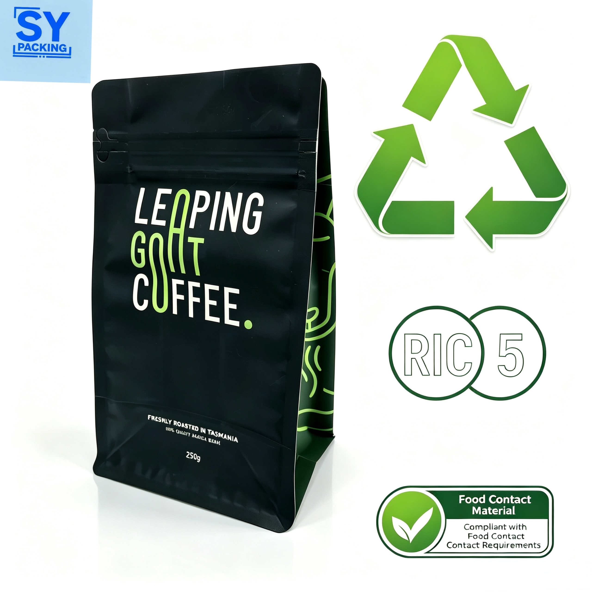

Navigating 2027 Packaging Compliance: FDA, EU 1935/2004 & Plastic Packaging Tax Standards

As global regulatory frameworks surrounding consumer safety and environmental sustainability become increasingly stringent, packaging compliance is no longer just a technical requirement—it is a critical business strategy. For brand owners, importers, and contract manufacturers preparing for 2027, staying ahead of international food contact safety and plastic tax standards is essential to protecting market access and brand reputation.
Food Contact Safety Compliance: Navigating FDA and EU 1935/2004
When exporting food, beverage, pet food, or personal care products to North American and European markets, regulatory authorities enforce strict limits on chemical migration, heavy metals, and material purity.
- FDA Compliance (United States): Flexible packaging materials intended for direct food contact must comply with 21 CFR regulations administered by the U.S. Food and Drug Administration. Key control points include testing for overall migration, specific chemical safety, and heat-resistance thresholds during processing and shelf storage.
- EU Regulation (EC) No 1935/2004 & (EU) 10/2011 (Europe): The European Union requires comprehensive compliance demonstrating that materials do not transfer their constituents into food in quantities that could endanger human health, bring about an unacceptable change in food composition, or deteriorate organoleptic characteristics. Declarations of Compliance (DoC) and rigorous specific migration limits (SML) testing are mandatory.
The Rise of Plastic Packaging Taxes: Financial Impacts on Supply Chains
In parallel with health safety regulations, governments across the UK, EU member states, and selective U.S. states have accelerated the rollout of Plastic Packaging Taxes (PPT). These policies place a direct financial penalty on non-recyclable multi-material packaging or flexible structures containing low percentages of post-consumer recycled (PCR) content.
Key regulatory shifts driving 2027 packaging procurement include:
- Tax Penalties on Non-Recyclable Laminates: Traditional multi-layer laminates (such as unseparable PET/AL/PE or PET/NY/PE structures) face increasing tax surcharges at customs and point-of-sale.
- Transition to Single-Material Streams: Regulations favor packaging designed for circular economy compatibility—specifically Mono-PE (RIC 4) and Mono-PP (RIC 5) flexible pouches that enter existing municipal recycling streams without requiring material separation.
How Shenying Packing Ensures Full Regulatory Compliance
At Shenying Packing, we help global brands navigate complex international compliance standards without compromising packaging performance, aesthetic appeal, or barrier protection:
- Certified Food-Grade Manufacturing: Operating under BRC, ISO, and QS certified clean-room manufacturing environments, ensuring full traceability and zero toxic heavy metal contamination.
- Turnkey Mono-Material Solutions: Supplying 100% recyclable mono-material pouches (PE/PE and PP/PP) that help clients bypass non-recyclable plastic taxes and fulfill corporate sustainability mandates.
- Comprehensive Documentation Support: Providing global buyers with full technical datasheets, material safety certificates, and official Declarations of Compliance (DoC) for hassle-free customs clearance.
Prepare Your Brand for 2027
Achieving international packaging compliance requires an experienced manufacturing partner who understands both technical engineering and global market policy. Contact our technical team today to audit your current packaging specs or request certified sample kits.
Need help ensuring your packaging meets 2027 compliance standards?
Our technical team can provide material audits, DoC documentation, and compliant mono-material samples.
📧 Email: may.lee@shenyingpacking.com
💬 WhatsApp: +86 13424643780